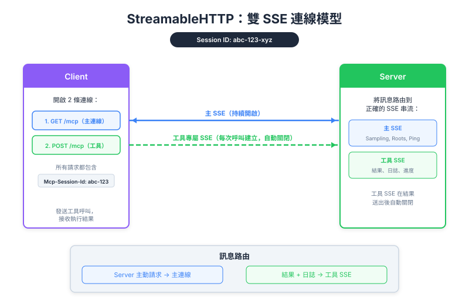

| Item | Detail |
|---|---|
| Exam Domain | D2 — Tool Design & MCP Integration (18%) |
| Task Statements | 2.1 (MCP transport 选择), 2.4 (远程 server 配置), 2.5 (SSE streaming 模式) |
| Source | model-context-protocol-advanced-topics / 03-transports / Lesson 13 |
SSE（Server-Sent Events）是部分恢复 HTTP 上 server-to-client 通信的 workaround，使用双连接架构 — primary SSE 处理 server-initiated 消息，per-tool SSE stream 处理特定调用的结果。

HTTP 只能由 client 发起。但 MCP 需要 server 推送消息（progress、log、sampling request）。SSE 翻转了这个限制：client 开启一个持久连接，server 随时可以通过该连接推送事件。
传统 HTTP：
Client ──request──→ Server
Client ←──response── Server
（server 无法发起）
使用 SSE：
Client ──GET /sse──→ Server
Client ←──event 1─── Server （server 随时推送）
Client ←──event 2─── Server
Client ←──event 3─── Server
...
| 步骤 | 动作 | 细节 |
|---|---|---|
| 1 | Client 发送 Initialize Request | POST 到 server |
| 2 | Server 返回 Initialize Result + session ID | Session ID 追踪此 client |
| 3 | Client 发送 Initialized Notification | 带 session ID 的 POST |
| 4 | Client 开启 SSE 连接 | GET request — 保持开启接收 server-initiated 消息 |
Session ID 至关重要 — 它将 GET SSE 连接与同一 client 的 POST 请求链接起来。
# 步骤 1-3：正常 handshake
session_id = initialize_handshake(server_url)
# 步骤 4：开启持久 SSE 连接
sse_stream = requests.get(f"{server_url}/sse",
headers={"Mcp-Session-Id": session_id},
stream=True
)
这是核心架构概念。有两种 SSE 连接：
Client Server
│ │
│──── GET /sse ────────────────→│ （Primary SSE — 保持开启）
│←─── server-initiated msgs ───│
│ │
│──── POST /tools/call ────────→│ （Tool SSE — 自动关闭）
│←─── progress, logs, result ──│
│ │
│──── POST /tools/call ────────→│ （另一个 Tool SSE）
│←─── progress, logs, result ──│
💡 Key Insight
双 SSE 设计意味着 server 可以通过 tool SSE 推送特定 tool call 的 progress，同时通过 primary SSE 推送无关的 server-initiated request。它们是独立的频道。
理解哪些消息走哪个频道是考试关键：
| 消息类型 | SSE 频道 | 原因 |
|---|---|---|
| Progress notification | Tool-specific SSE | 绑定到特定 tool call |
| Log 消息 | Tool-specific SSE | 在 tool 执行期间产生 |
| Tool 结果 | Tool-specific SSE | 该次调用的最终答案 |
| CreateMessage（sampling） | Primary SSE | Server-initiated，不绑定 tool call |
| ListRoots | Primary SSE | Server-initiated，不绑定 tool call |
Lesson 12 的两个配置标志直接影响 SSE：
| 标志 | 对 SSE 的影响 |
|---|---|
stateless_http=true |
无 session ID → 无 primary SSE 连接 → 无 server-initiated 消息 |
json_response=true |
完全无 streaming → tool call 只返回最终 JSON → 执行期间无 progress/log |
两个标志都启用 = SSE 完全停用。回到基本 HTTP request-response。
stateless_http 杀死 primary SSE。json_response 杀死所有 streaming。| Front | Back |
|---|---|
| SSE 在 MCP 中解决什么问题？ | HTTP server 无法主动通信 — SSE 提供持久连接让 server 推送事件 |
| 两种 SSE 连接类型是什么？ | Primary SSE（GET、保持开启、server-initiated 消息）和 Tool-specific SSE（POST、per-call、自动关闭） |
| Progress notification 路由到哪里？ | Tool-specific SSE 连接（绑定到特定 tool call） |
| Sampling（CreateMessage）request 路由到哪里？ | Primary SSE 连接（server-initiated，不绑定任何 tool call） |
| Session ID 的作用是什么？ | 将持久 GET SSE 连接与同一 client 的 POST 请求链接起来 |
stateless_http=true 会怎样？ |
无 session ID、无 primary SSE 连接、无 server-initiated 消息 |
json_response=true 会怎样？ |
完全无 SSE streaming — 只返回最终 JSON 结果 |
| SSE 的建立顺序是？ | Initialize Request → Initialize Result（获取 session ID）→ Initialized Notification → GET request 开启 primary SSE |